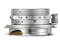
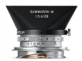
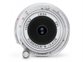

器材库 > 35mm画幅MF定焦镜头 > Summaron-M 28/5.6

详细规格
发布日期
2016-10-20
厂家推荐价格
1,900.00 （英镑）
焦距
28mm
最大光圈
f/5.6
最小光圈
f/22
视角（对角）
75°
视角（水平）
65°
视角（垂直）
46°
镜头结构
6片/4组
滤镜口径
34mm
镜头卡口
Leica M
防抖
否
颜色
银色
尺寸
51×18mm
重量
165g
附件
方形遮光罩
螺丝2018-04-10 09:544.75 分
操作性 5.00耐用性 5.00性价比 4.00解像力 4.50色彩还原 5.00机械结构 5.00
hh14072017-01-03 10:324.83 分
操作性 5.00耐用性 5.00性价比 4.00解像力 5.00色彩还原 5.00机械结构 5.00
产品图 / 样片
Summaron-M 28/5.6

Summaron-M 28/5.6

Summaron-M 28/5.6